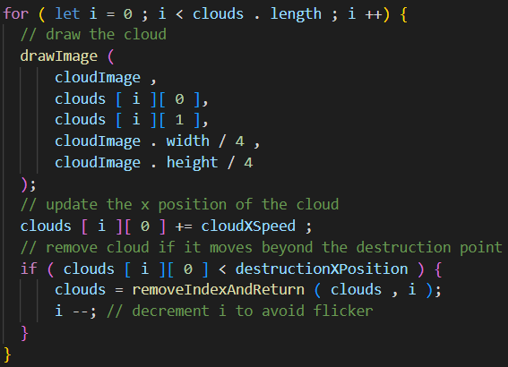
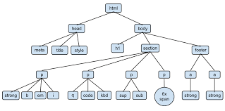
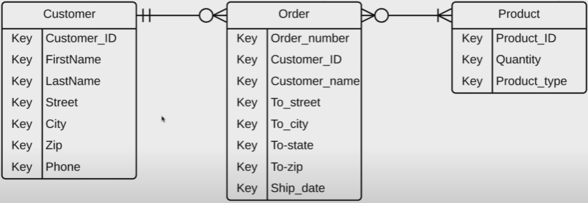

Informatisk Grundforløb
Vi snakkede om hvordan man overvåger befolkningnen i alle til næsten alle lande, og hvordan det påvirker folk
lektierne til dette forløb var:
Mass surveillance - Mass surveillance
surveillance capitalism - medium.com - What is survaillance capitalism og Shoshana Zuboff on surveillance
De tre typer for verificering:
- Data (Noget man ved) - dette kan være et password, ulempen med denne metode er, at det kan blive lært til andre, som så kan verificere sig selv som dig.
- Objektiferet (noget man har) - dette kan være en nøgle eller et sikkerhedskort. ulempe - kan blive stjålet
- Biometrisk (noget man er) - eksempel: fingeraftryk, iris, hjernescan - ulempen, hvis du mister din biometriske nøgle, er du fucked
Multi-faktor-verificering:
Verificering med mere end én metode for verificering - Eksempel: engangskoder
Trusselsmodellen
De fire faktorer der underbygger en forståelse for en Thread Model er:
- Anti-fænomen
- - Hvem er modstanderen
- Beksyttelsesværdi genstand
- - Hvad er modstanderen efter?
- Planen
- - Hvordan beskytter jeg modstanderens ønskede bytte?
- Modstanders midler
- - Hvad bruger modstanderen i mod mig?

Guess what!
Du smuk😘
LRE privilegierne:
- Læs - hvad må læses?
- Rediger - hvad må foreslås?
- Eksekver - hvad må ændres?
Kryptering er, at nedbryde data til ulæselighed, men ikke udover dekryptering, så du kan læse det igen. Kryptering kan i bund og grund gøres på to måder, der er:
- Symmetric Key Encryption / Private Key Encryption
- Asymmetric Key Encryption / Public Key Encryption
En Privat key sørger for at kun den eller dem der skal se dataen (beskeder, dokumenter osv) kan se den, med samme nøgle. Til denne key føres der to metoder for brug:
- Stream Ciphers - Stream Ciphers kryptere data bit fra bit, det er den mindst brugte metode til Kryptering
- Block Ciphers - Block Ciphers kryptere data hele blokke af bits, disse blokke kan have en størrelse på enten 64, 128 eller 256 bits
En public key er en key der er til offentlig tilskue den kan ses af alle der vil se den.
Til Asymmetric Encryption skal man bruge både en Public key og Private key en for Krypteringen og en for Dekryptering, Private key'en tilhøre den der har skabt dem begge. For at vide, at det rent faktisk er den person som man gerne ville have bruger sin public key, skal man bruge en teknik der hedder Digital Signature, som fungere sådan her:
Cyberattacks kommer i en masse former og farver. Et cyberattack defineres som en et indgreb i et peronligt område vha cyberspace. Forskellige metoder til dette er:
- Pretexting - Forfalskning af autoritet, det mest kendte & stereotypiske eksempel på pretexting er den der inder der ringer fra Microsoft og siger, at der er en virus på din computer.
- Trojan Horse - En Trojan Horse er en form for notifikation der ser venlig ud, men så snart du åbner den, får du et stykke malware
Design af IT-systemer
Der er 5 principper, man skal passe på, nå man laver Graphic Design:
- Alignment
- Jo mere en hjemmesides sager er på lige fod, både vand- og lodret, jo nemmere er det for brugeren, at finde frem og tilbage på siden.
- Repetition
- Stilarten skal gerne være gengående på din hjemmeside, som f.eks. farver og former.
- Contrast
- Hierarchy
- Balance - Symmetry
- Balance - Tension
Shillington Education: 5 basics principles of Graphic Design
Dette er en metode for at lave hjemmesider, til den bruges der 3 faser: Assess, Design og Build
ASSESS
Evaluer, hvad er problemet? Til assessing er der 5 metoder:
- Interviews (snak med brugerne af produktet).
- Observations (Kig på brugernes adfærd).
- Surveys (Spørg brugerne).
- User testing (få brugerne til at afprøve produktet).
- Inspection Methods (Kig selv på produktet, som om du selv var en bruger).
Kvalitativ undersøgelsesmetode: er at tage tal på observationer af brugers adfærd.
Kvantitativ undersøgelsesmetode: er at beskrive en observation, med brug af udseende af situationen.
Naturalistisk undersøgelsesmetode: er at undersøge (på en af de fem måder) brugerens holdning til dit produkt, mens du ikke har produktet mellem dig selv og brugeren (kan blive omtalt som realistisk undersøgelse).
Kunstig undersøgelsesmetode: er når man undersøger brugerens holdning til dit produkt, mens du ikke har produktet mellem dig og brugeren (kan blive omtalt som urealistisk)
DESIGN
Kom frem til, Hvordan løser vi dette problem
Personas, scenarios, User stories
Sketching and Ideation
Storyboarding
Brainstorming
BUILD
Løs problemet
Spiralmodellen beskriver hvordan en produktion process fungere. Du starter i Assess fasen hvor alt er nyt, her skal du finde ud af hvad der er et problem. Efter Assess fasen skal du optegne ideer for hvordan man løser det bestemte problem. Til slut skal du bygge løsningen til det problem du fandt i assess fasen vha. det design du lavede i design fasen. når du er færdig med build fasen, starter du forfra, denne gang har du dog dit build fra sidste omgang.
Dette bliver du ved med indtil du er færdig, og har lavet et fantastisk produkt.
Programmering
Github er en hjemmeside, hvorpå programøre kan oploade deres produkter og dele den med andre.
Flowcharts er modeller der viser hvordan en process fungere. En god hjemmeside til at lave flowcharts er draw.io
Til dette forløb er der en opgave/øvelse, hvor vi skal lave et flowchart for en kode, der blev udgivet af vores lærer:
måde som jeg løste opgaven på er:
CRUD står for Create, Read, update, and delete. Disse er de fire basiske operationer/aktioner inden for computer programmering, og bliver brugt til, at beskrive user interface. CRUD fungere lidt ligesom spiralmodellen, du bliver ved og ved indtil lortet virker. Der er andre akronymer som minder om CRUD:
- CRUDL - Create, read, update, delete, list
- BREAD - Browse, read, edit, add, delete
- DAVE - Delete, add, view, edit
- CRAP - Create, replicate, append, process
DOM (Document Object Model) er et hierarkisk system der sørger for, at visse strukture/kommandoer kommer før andre i form af kode
Integrated Development Enviroment er en platform hvorpå et program kan skrives, læses og/eller køres, sådan en IDE kaldes også for text editor. Der er mange forskellige slags IDE'er, én af dem er den jeg bruger til, at skrive i lige nu, nemlig Visual Studio Code (VSC)
Severe og Databaser
Client-server modellen viser hvordan interaktion/kommunikation mellem clienten (brugeren) og serveren fungere henover internettet

3-lags Arkitektur opdeles i 3 lag (selvfølgelig), de 3 lag er Client-tier, Logic-tier og Data-tier.
Client-tier
Client-tier er brugeren.
Logic-tier
Logic-tier er programmet som brugeren bruger
Data-tier
Data-tier er det der står bag programmet, og det som programmet betvinges efter.
Terminalen er det samme som kommandoprompt'en, vi bruger den henholdsvis til at importere pacs til din kode. Man bruger også Terminalen til, at starte servere op.
HyperText Transfer Protocol er den mest udbredte metode, at transformere information fra server til client, den sørger for at du, som client, kan se fra dit tier. For at se om en hjemmeside er farlig eller ej (fyldt med vira og andet møg) anskaffer man sig et "certifikat", som er S'et i HTTPS, det står for secure, og det betyder at hjemmesiden er på en sikker server som ikke giver din computer malware
En ERD er en metode til, at visualisere entities fællesrealationer, og den bruges til styring af databaser. Fagbegreberne til dette emne er:
- Primary key - En bestemt data/attribut ved en entity, som er udestående fra de andre dataer, den skal følge tre regler:
- Den må ikke ændres
- Den må dublikeres
- Den må aldrig være lig ingenting
- Foerign Key - En bestemt data/attribut ved en entity, som forekommer i en anden entity, de har også et sæt af regler:
- Den må ikke kunne ændres
- Den må gerne dublikeres
- Composite primary key - To til flere dataer sammensat til én, denne key fælger og så et sæt regler:
- Den skal sammensættes af den kortest mulige kombination
- Dens byggesten skal være primary keys
Hvis en kunde køber et produkt hos Amazon, så skal Amazon vide forskellige ting omkring denne kunde og deres køb, de tre grund ting der skal kendes til er Hvem, Hvad og Hvor(når). Disse tre ting kan brydes ned til Customer, Product og Order. 
Hvis man har en Customer "John Hilter (JH)", han logger ind på amazon.com og JH køber en Paperback kopi af Mein Kampf, denne Product er sin egen entity, når han bestiller den får han et ordrenummer, dette odrernummer bliver til den entity der skal være bridge entity (En bridge entity sørger for at der er korelation mellem en entity og en anden, den sørger også for, at man får så mange informationer som overhovedet muligt) mellem Customer og Product.